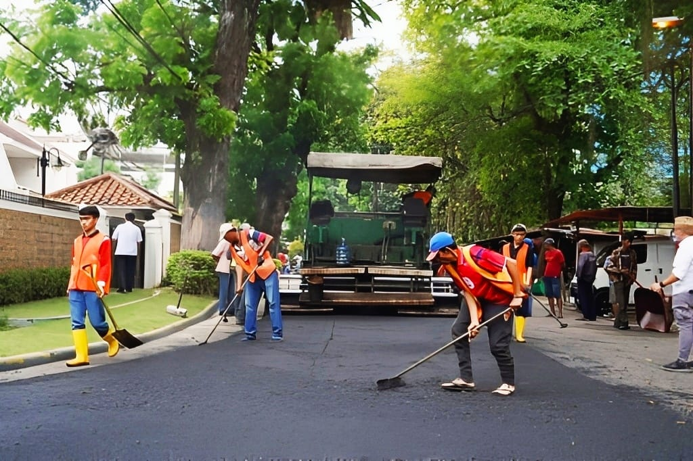

Aspal Hotmix Indonesia
Berpengalaman lebih dari 20 tahun dalam pelaksanaan pekerjaan infrastruktur terutama dibidang saluran dan jalan.

Aspal Hotmix Indonesia
- Perencanaan yang matang, pengerjaan cepat, finishing hemat biaya.
- Tim teknis kami menerapkan metode hotmix terkini dan kontrol mutu ketat untuk hasil yang sesuai spesifikasi.
- Spesialis aspal hotmix untuk proyek jalan, area parkir, dan saluran. Pengalaman luas memastikan hasil kuat dan tahan lama.
Hubungi kami untuk konsultasi gratis dan penawaran terperinci — solusi pengaspalan profesional yang dapat Anda andalkan.

Aspal Hotmix Indonesia
Aspal Hotmix Indonesia berdiri dengan semangat karya anak bangsa untuk memperkuat fondasi negeri ini melalui pembangunan infrastruktur yang andal dan berkelanjutan. Kami percaya bahwa setiap lapisan aspal yang kami hampar adalah bagian dari perjalanan menuju Indonesia yang lebih maju.
Hubungi KamiSub bidang Infrastuktur
Land Cleaning
Pembersihan lahan secara menyeluruh meliputi pemotongan vegetasi, pembongkaran struktur ringan, dan pembersihan puing/pohon untuk mempersiapkan lokasi proyek. Kami menggunakan peralatan berat yang tepat sehingga pekerjaan cepat, aman, dan siap untuk tahapan konstruksi berikutnya.
Pemetaan, perencanaan lahan
Layanan pemetaan dan perencanaan menyediakan survei topografi, studi tanah, dan perencanaan teknis untuk memastikan desain sesuai kondisi lapangan. Tim kami menyusun rencana kerja yang efisien, gambar kerja, serta estimasi anggaran (RAB) untuk meminimalkan revisi di lapangan.
Pemagaran lahan
Pemasangan pagar dan pembatas lahan untuk keamanan proyek dan pembatasan area kerja, meliputi kanstin, konstruksi pagar beton atau panel, serta pemasangan batu pondasi. Kami mengutamakan ketelitian pengukuran dan bahan berkualitas agar pagar tahan lama dan memenuhi standar estetika kerja.
Pembuatan saluran
Pembuatan saluran dan sistem drainase dirancang untuk mengatasi limpasan air permukaan, mencegah erosi, dan menjaga umur panjang permukaan jalan. Pekerjaan mencakup penggalian, pemasangan gorong-gorong/kanal, perkuatan dinding, serta finishing dengan struktur yang mendukung aliran dan pemeliharaan mudah.
Pembuatan jalan
Pelaksanaan struktur jalan mencakup persiapan subgrade, pemasangan lapisan pondasi (sub-base & base), serta stabilisasi material sesuai spesifikasi teknik. Kami menggunakan material berkualitas dan pengujian kepadatan untuk memastikan kekuatan dan daya dukung jalan sebelum tahap pengaspalan.
Pembuatan jambatan
Kami menyediakan layanan pembuatan jembatan lengkap, mulai dari survei dan desain struktural, pemilihan pondasi, hingga konstruksi badan jembatan dan finishing. Dengan tim struktur dan sipil berpengalaman dan pengawasan mutu ketat, setiap jembatan dirancang untuk memenuhi standar keselamatan dan beban lalu lintas yang berlaku, serta tahan terhadap kondisi lingkungan lokal.